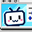

B哩B哩主题 / Bilibili Theme Customizer
×
启用主题
语言
中文
English
桌面背景
默认渐变
效果预览
内容面板
主题设置预览
浏览...
移除
支持图片、GIF 和 MP4，最大 20 MB；GIF 与视频保持动态，视频静音循环播放。
应用范围
全元素
内容面板
清除页面底色，导航和内容面板显示毛玻璃。
界面效果
毛玻璃
透明
玻璃浓度
58%
模糊强度
14 px
点缀色
网页字体颜色
导航与按钮
勾选要隐藏的按钮；各项可以独立恢复。
一键隐藏全部
一键显示全部